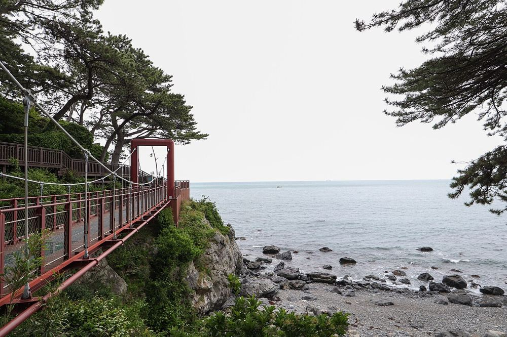
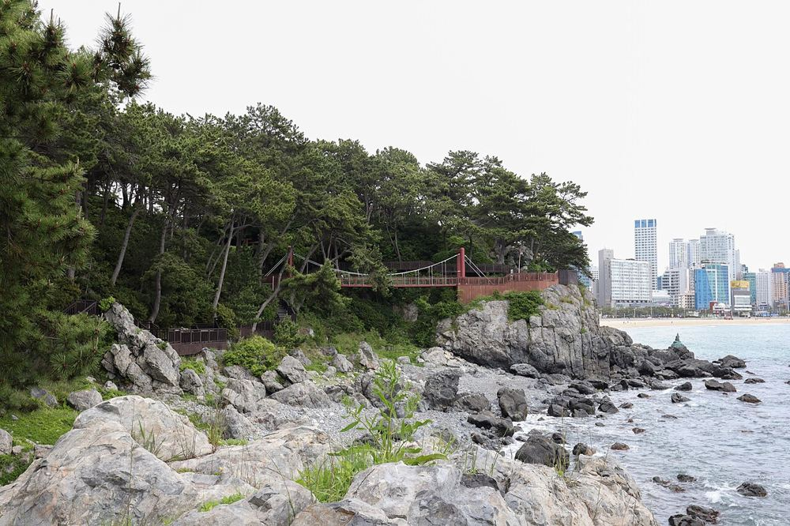
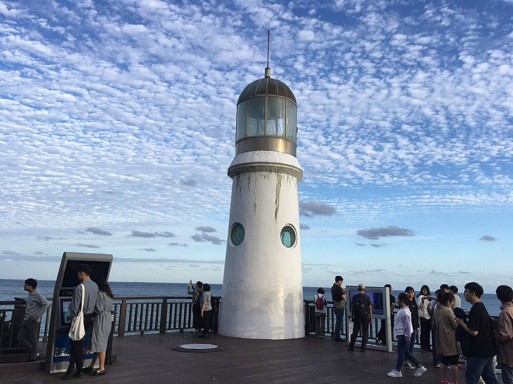
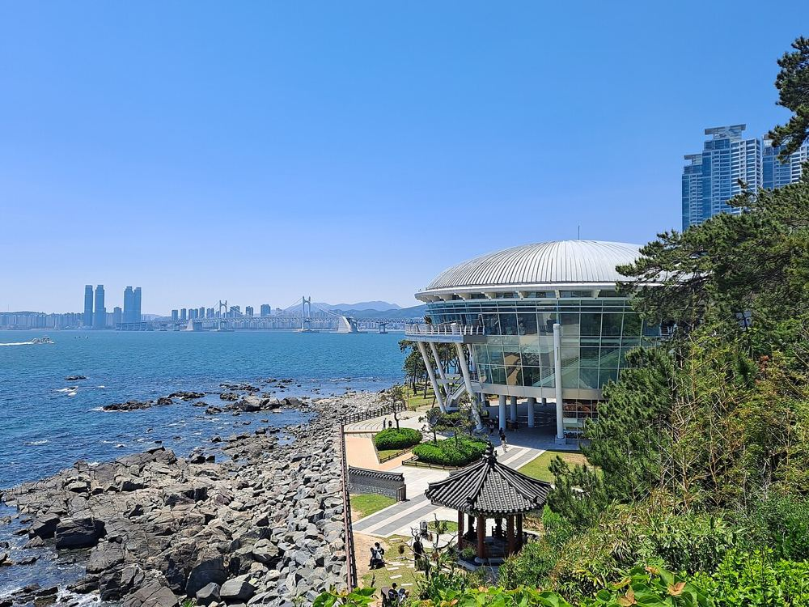
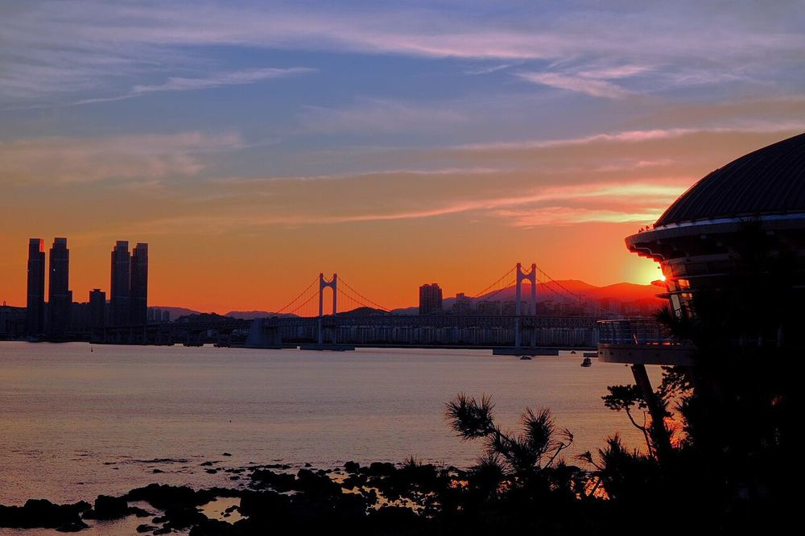
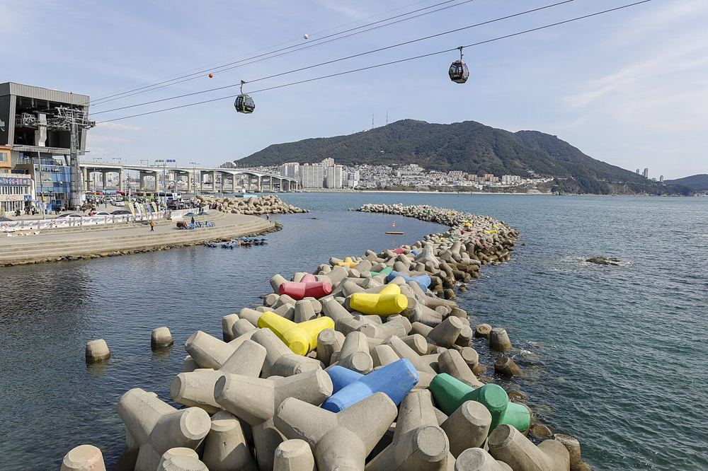
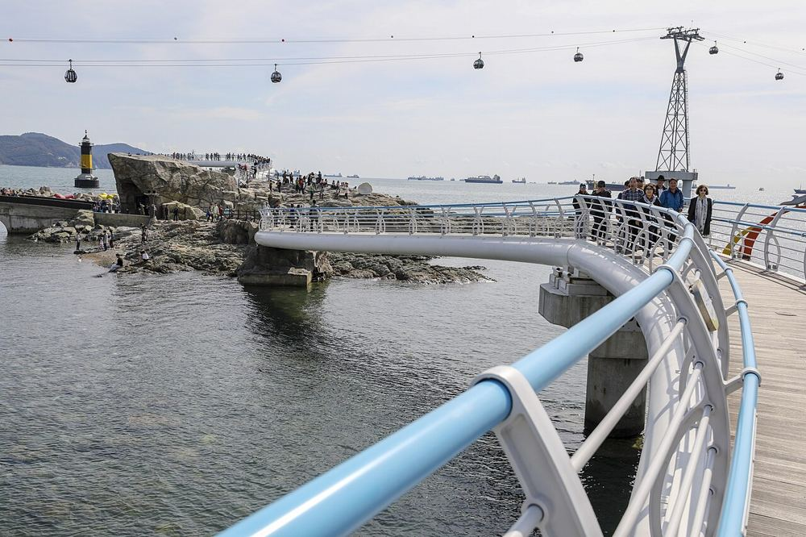
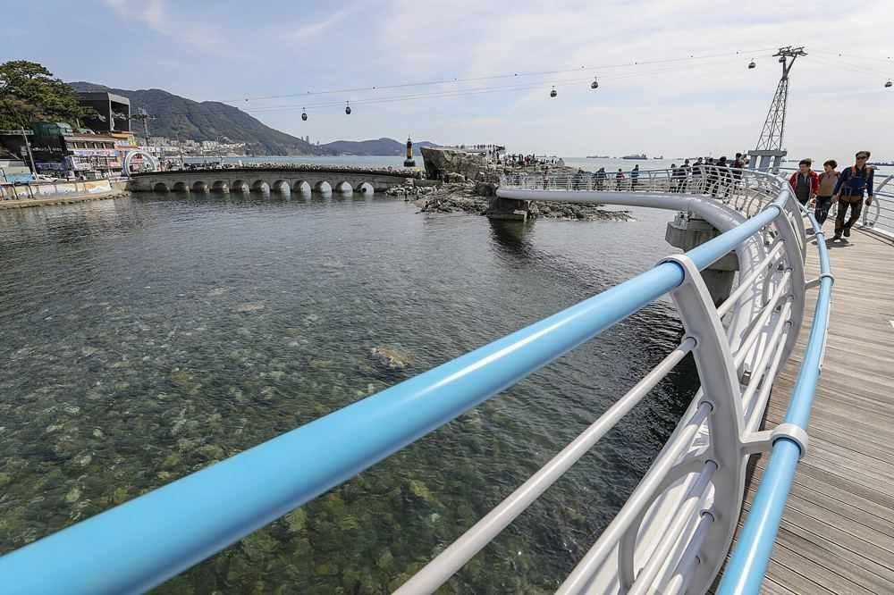

Обновлено 07.10 в 23:55 по Корее. Уже посмотрел и убрано: Yonggungsa, Blueline, восточный Haeundae (06.10), Huinnyeoul (07.10). Часы работы: Kakao Map 07.10. Такси: Naver Maps 07.10 15:50 (обычный трафик). Погода AccuWeather 07.10: ср и чт солнце 25°, без дождя; пт днём облачно с прояснениями, ночью гроза. Канатка: её сайт 07.10. Фото: Wikimedia Commons. Отель: Fairfield Songdo, 113 Songdohaebyeon-ro (для такси 부산 서구 송도해변로 113), +82 51 260 0000.
четверг пятница отель. Google Maps в Корее строит только транспорт, для такси жми Naver.
Чт 08.10 · активный день: Igidae, BIFF, Dongbaek на закат
Четверг - активный день на востоке города, с ~09:30. Тропа над обрывами Igidae → обед суши в Millak → площадка кинофестиваля BIFF → остров Dongbaek на закат 17:59 → ужин 꼬막 → домой. Ночные виды убрал. Taejongdae в этот день не помещается. BIFF: фестиваль идёт 06-15.10, главная площадка - Busan Cinema Center (Centum City), она в маршруте. «BIFF Square» - это другое место, улица уличной еды в старом городе Nampo, рядом с рынком Jagalchi.
Что увидишь: старт у Oryukdo Skywalk - стеклянная подкова над обрывом, ~35 м над водой. Дальше тропа вдоль скалистого берега через лес: вулканические скалы, бухточки, деревянные настилы и лестницы, впереди всё время мост Gwangan и небоскрёбы Haeundae. Идёшь на север до Dongsaengmal у залива Gwangalli.
Skywalk 09:00-18:00, бесплатно. Вся тропа 4,5-4,7 км, неспешно ~2,5 часа, много ступенек - нужна нормальная обувь. Кругового маршрута нет: из точки A в точку B, параллельно внутри парка идёт дорога 이기대공원로 - на неё можно выйти раньше. Точка B (финиш): Google · Apple (동생말 전망대). Источники: busan-trip.com, welcome-busan.com, AllTrails.
🚕 Точка B Dongsaengmal (동생말) → Millak: 4,7 км, 16 мин, ~7 300 ₩. Такси вызывай к 동생말 전망대 (Kakao T) или выйди на дорогу 분포로. Таксисту: 민락로28번길 19 (연어정이)
2
연어정이, суши с лососем (Millak)
연어정이 · обед
Что увидишь: небольшой суши-бар с лососем на втором этаже над пабом Ninano (оба с твоего скриншота), в двух минутах от пляжа Gwangalli.
11:00-21:00 (Kakao, 07.10). Суши 10 шт. 20 000 ₩, нагасаки-удон 10 000 ₩. После обеда можно пройтись по пляжу Gwangalli.
Что увидишь: главная площадка Busan International Film Festival: здание с огромной нависающей крышей-козырьком. Сейчас идёт фестиваль (06-15.10), вокруг баннеры и публика. Можно просто посмотреть здание и атмосферу, на показы нужны билеты.
09:00-21:00 (Kakao, 07.10). На осмотр 30-45 минут. Фото баннера - с фестиваля 2020 года.
🚕 Cinema Center → Dongbaek: 3,4 км, 12 мин, ~6 400 ₩. Таксисту: 동백섬. Будь там к ~16:45
4
Остров Dongbaek
동백섬 · закат 17:59
Тропа вдоль моря через сосны

Подвесной мост над скалами

Скалы и вид на пляж Haeundae

Маяк на краю острова

Nurimaru APEC House

Закат с маяка: мост Gwangan
← листай фото →
Что увидишь: лесистый мыс на западном конце пляжа Haeundae. Вокруг идёт прибрежная тропа ~950 м через сосны прямо над скалами: подвесной мост, маяк на краю, статуя русалки, Nurimaru APEC House. С маяка солнце садится за мост Gwangan. Рядом западный конец пляжа Haeundae - можно пройтись по песку.
Тропа открыта круглосуточно, на круг ~1 час. Nurimaru внутрь 09:00-17:00 (Kakao).
🚕 Marine City → отель: 21 км, 30 мин, ~18 800 ₩ + 2 100 ₩. Таксисту: 부산 서구 송도해변로 113
Пт 09.10 · канатка утром и вылет
Пятница: канатка до выезда. 09:00 канатка (8 мин пешком от отеля) → мыс Amnam: подвесной мост к скале и террасы → обратно к ~10:30 → выезд из отеля до 11:00. Вещи можно оставить на ресепшене (спроси заранее) и поехать после выезда - тоже успеваешь до такси в 13:00.
1
Канатка Busan Air Cruise + мост Yonggung
송도해상케이블카 · утро, ~1,5 ч

Кабинки над заливом Songdo

Кабинки идут над скалой у пляжа

Залив, мыс Amnam и канатка
← листай фото →
Что увидишь: кабинки над заливом от пляжа Songdo до мыса Amnam, до 86 м над морем, в Crystal-кабинке прозрачный пол. Наверху, в ~180 м от станции, подвесной мост Yonggung к скале над морем. Плюс смотровые террасы станции и лесной парк Amnam вокруг.
Канатка в пт 09:00-22:00 (Kakao). Туда-обратно обычная 19 000 ₩, Crystal 24 000 ₩ (сайт канатки, 07.10). Мост Yonggung 09:00-17:30 (Kakao), вход платный, около 1 000 ₩ по отзывам.